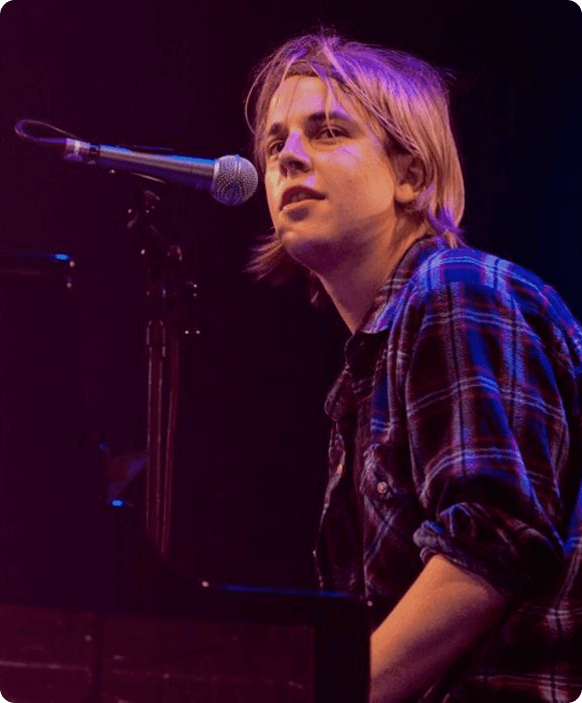
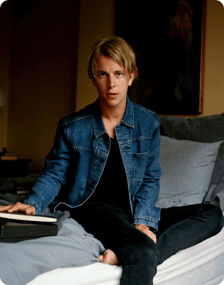

Who?
Who?
Tom Peter Odell was born on November 24, 1990 in
Chichester, England — is a singer, musician and composer. He started writing songs at 13
years old, but he didn't tell anyone about them because he felt that it wasn't cool. When he
was 18, Odell refused to go to York University and tried to get a place at a music school
in Liverpool.
When these efforts failed,
he moved to Brighton to gain live
performance experience. Using his grandmother's car, Tom regularly
traveled to London to play concerts and advertise at music schools.He studied at the British
and Irish Modern Music Institute (BIMM) in Brighton. Before moving to London in 2010, he
began playing in the band Tom and the Tides.
However, he later decided to become a solo artist because he didn't want to rely on other
people.
Career
Career
The start
2012-2013

Tom Odell signed a contract with the label In
the
Name Of thanks to
Lily Allen, who said that "his energy on stage reminded her of David Bowie. Released his
debut "Extended Play, Songs from the album Another Love",
in October 2012. Odell was announced as one of the 15 nominees for the "BBC Sound of
2013".
Odell's
music has been used in many Burberry fashion shows. Odell's debut album, The Long Way
Down,
was released on June 24,
2013 and had a number one in the official UK rankings.
Tom Odell signed a contract with the label In the Name
Of thanks to
Lily Allen, who said that "his energy on stage reminded her of David Bowie. Released his
debut "Extended Play, Songs from the album Another Love",
in October 2012.
Odell was announced as one of the 15 nominees for the
"BBC Sound of 2013".
Odell's
music has been used in many Burberry fashion shows. Odell's debut album, The Long Way
Down,
was released on June 24,
2013 and had a number one in the official UK rankings.
The recognition
2014-2015
Tom Odell was named "Songwriter of the Year" in
2014. "Ivor Novello
Awards" ceremony. Odell's song "Can't Pretend"
was used in the TV series 100. "Can't Pretend" and "Long Way Down" were also featured on
"Blacklist" and the award-winning
film "Blame the Stars". His song "Grow Up with Me" was featured in the episode Reign. His
song "Heal" was also used in the
film. "If I stay", the NCIS series, The Vampire Diaries and Elementary along with "Another
Love".
The wrong crowd
2016-2017
Odell began work on his second studio album in 2015
and played many
new songs on Forest Live.
On April 4, 2016, the first single "Wrong Crowd" was released On April 15, 2016, the second
single
from the album "Magnetised" was released. The full album was released on June 10, 2016.
The jublie road
2017
Odell began work on his second studio album in 2015
and played many
new songs on Forest Live.
On April 4, 2016, the first single "Wrong Crowd" was released On April 15, 2016, the second
single
from the album "Magnetised" was released. The full album was released on June 10, 2016.
The best songs
The best

Another
love
And Tom Odell is an unsurpassed cover
artist. In his
interpretation, they are not at all similar
to the originals. Listen, for example, to this performance of the famous hit by Lana Del
Rey.
Here i
am
One of Odell's debut video works Another
Love was filmed
back in 2012.
Almost all the clips for his songs are mini-dramas that make you rejoice or cry, but
always empathize with the main characters.


Wanna love
somebody
The same clip for the Tom Odell song, which
starred Hollywood actor Kevin Spacey, known for the sex scandal and the role of Frank
Underwood
in the TV series "House of Cards".
More him
More
